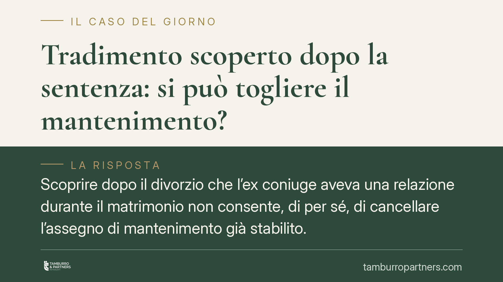

Tradimento scoperto dopo la sentenza: si può togliere il mantenimento?
Scoprire dopo il divorzio che l'ex coniuge aveva una relazione durante il matrimonio non consente, di per sé, di cancellare l'assegno di mantenimento già stabilito. La Cassazione ha chiarito che il silenzio su fatti sfavorevoli non equivale a frode processuale. Comprendere questa distinzione evita ricorsi destinati a essere respinti.

Il caso e la domanda ricorrente
La situazione è più frequente di quanto si pensi. Una sentenza definisce l'assegno di mantenimento in favore di un coniuge. A distanza di tempo, l'altro scopre elementi nuovi: una relazione extraconiugale che era in corso durante il matrimonio e di cui nulla si sapeva al momento del giudizio.
La reazione istintiva è chiedersi se quella scoperta possa riaprire i giochi e cancellare l'obbligo economico. La risposta della giurisprudenza è netta e, per molti, controintuitiva: no, salvo un caso specifico e difficile da provare.
Inquadramento normativo
Una sentenza passata in giudicato — cioè non più impugnabile con i mezzi ordinari — può essere rimessa in discussione solo attraverso strumenti eccezionali. Tra questi c'è la revocazione, disciplinata dall'art. 395 del codice di procedura civile.
Tra i motivi tassativi previsti dalla norma rientra il dolo di una delle parti in danno dell'altra (art. 395, n. 1, c.p.c.). Ma qui sta il punto: non ogni comportamento scorretto integra questo "dolo processuale". Occorre un'attività fraudolenta positiva, un artificio o un raggiro idoneo a paralizzare o sviare la difesa dell'avversario e a impedire al giudice di conoscere la verità.
La Cassazione Civile, Sez. I, ha precisato che il semplice silenzio su circostanze a sé sfavorevoli non basta. Tacere non è ingannare. Del resto, l'art. 88 c.p.c. impone alle parti un dovere di lealtà e probità, ma la sua violazione non si traduce automaticamente in una causa di revocazione della sentenza.
Perché il tradimento non riapre la causa
La logica è coerente con il sistema. Il processo sull'assegno di mantenimento valuta le condizioni economiche delle parti e, ove rilevante, le ragioni della crisi coniugale. Se una relazione extraconiugale era un fatto potenzialmente decisivo, spettava alla parte interessata allegarlo e provarlo nel corso del giudizio, con gli strumenti istruttori disponibili.
La scoperta successiva di quel fatto rientra nella categoria dei fatti sopravvenuti alla conoscenza, non dei comportamenti fraudolenti. L'ex coniuge che nulla ha detto sulla propria infedeltà non ha compiuto un raggiro: ha semplicemente omesso di rivelare una circostanza per sé svantaggiosa. Comportamento umanamente comprensibile e giuridicamente non sanzionabile con la revocazione.
Per ottenere l'annullamento occorrerebbe dimostrare qualcosa di più: documenti falsi, testimonianze artefatte, manovre attive volte a nascondere la verità al giudice. La prova di un simile dolo è, nella pratica, molto ardua.
Implicazioni pratiche
Chi confida di poter cancellare l'assegno grazie a una scoperta tardiva rischia di avviare un contenzioso costoso e con esito prevedibilmente negativo. La sentenza definitiva mantiene la propria efficacia.
Esiste però un binario diverso e più realistico: la revisione delle condizioni economiche. L'assegno di mantenimento non è immutabile. Se sopravvengono giustificati motivi — un mutamento delle condizioni patrimoniali, l'instaurazione di una stabile convivenza da parte del beneficiario, un miglioramento reddituale — è possibile chiederne la modifica o la revoca per il futuro.
Attenzione alla distinzione. La revisione non serve a punire un tradimento passato né a riaprire la valutazione sulle responsabilità della separazione. Serve a fotografare la situazione attuale e a adeguare l'obbligo economico. La scoperta di una convivenza in atto oggi, ad esempio, ha ben altra rilevanza rispetto a una relazione consumata anni prima e ormai conclusa.
Cosa fare in concreto
- Non confondere i piani. Verificate se ciò che avete scoperto riguarda il passato (irrilevante ai fini della revocazione, salvo frode) o la situazione presente dell'ex coniuge (potenzialmente rilevante per la revisione).
- Raccogliete elementi sulle condizioni attuali. Se il beneficiario convive stabilmente o ha migliorato la propria posizione economica, documentatelo con prove concrete e verificabili.
- Valutate la revisione, non la revocazione. Il procedimento di modifica delle condizioni è la strada tecnicamente corretta per intervenire sull'assegno in presenza di fatti sopravvenuti.
- Diffidate delle scorciatoie. Un ricorso per revocazione basato solo sulla scoperta di un tradimento tacuto è quasi sempre destinato al rigetto e comporta condanna alle spese.
- Fatevi assistere prima di agire. Consigliamo una valutazione preliminare della documentazione per capire quale strumento sia realmente esperibile nel vostro caso.
---
*Contributo informativo a cura di Tamburro & Partners - Avv. Giuseppe Tamburro. Non costituisce parere legale.*
Ogni famiglia ha il suo equilibrio.
Separazione, divorzio, affidamento, assegno: se vuoi un confronto riservato su una specifica situazione, scrivi allo studio. Ti rispondiamo entro un giorno lavorativo.